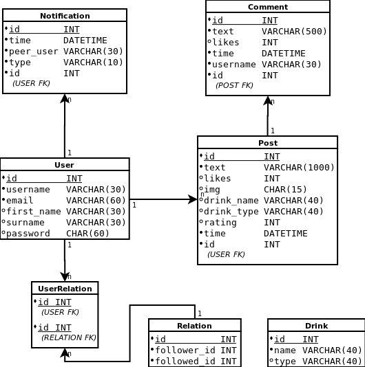
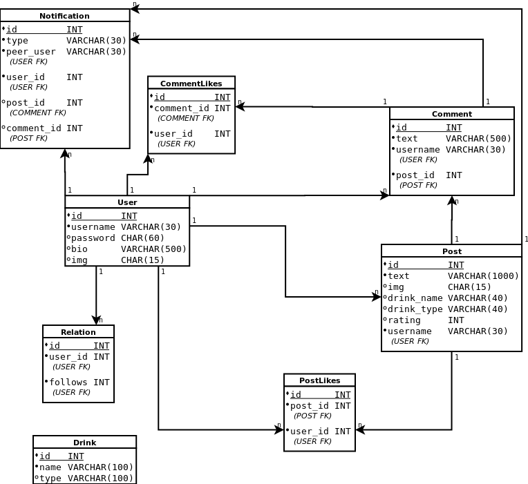

Pint.it
Oluiden ympärille keskittynyt sosiaalinen media.
Alkusanat
Toimin pääkehittäjänä Pint.it-sovelluksen parissa. Tein tasaisesti frontendia sekä backendia ja huolehdin, että jokainen ohjelmiston osa on valmis julkaisuun kehityksen lopussa. Pidin huolen, että jokainen noudattaa yhteisiä Coding guidelines -määritteitä, jotta koodi olisi helposti luettavaa sekä kunnollista. Osallistuin myös jokaiseen tiimiämme koskevaan tekniseen haasteeseen, sekä otin vastuun, jos jokin meni pieleen.
Suurin tekninen haaste oli NativeScriptin XML -kielen opettelu, johon kuluikin monta viikkoa projektin alkuvaiheessa. Vaikka käytimme jo vanhastaan tuttua Express -kirjastoa backendin rakentamiseen, päätimme ottaa Sequelize -frameworkin MySQL-tietokannan ohelle, joka samalla toi lisää haastetta projektiin.
Tavoitteet
Kovalla työllä sekä ylimääräisien tuntien takia saimme toimivan sosiaalisen median aikaiseksi aikataulussa. Käyttäjä voi rekisteröityä/kirjautua sisään normaalisti tai sosiaalisen alustan avulla. Käyttäjä voi myös luoda uusia postauksia, joissa hän voi arvostella olutta mielensä mukaan. Hän pystyy kommentoimaan toisten postauksia sekä tykätä muiden postauksista ja kommenteista. Käyttäjällä on myös mahdollisuus muokata profiiliaan sekä seurata toisia käyttäjiä, joiden sisällöstä he tykkäävät.
Aikataulun puutteen vuoksi emme kuitenkaan saaneet mielestäni tarpeeksi oluisiin liittyvää sisältöä, joka olisi erottanut meitä tarpeeksi muista oluisiin liittyvistä sovelluksista (käyttäjän oma olutlista, Google Maps -paikannin baareille jne.).
Osaaminen
Frontend
NativeScript + Angular
Hankittu osaaminen
- Extensible Markup Language (XML)
- UI/UX -tyylittely mobiili-applikaatioille
- Puhelimen ominaisuuksien käyttö (kamera, notifikaatiot jne.)
- Virheenkäsittely
- Elementtien manipulointi
- Kuvien tallentaminen sekä lähettäminen Base64String -muodossa
- Sosiaalinen kirjautuminen (Google & Facebook)
Syvennetty osaaminen
- Komponentit
- Asynkroninen ohjelmointi
- Autentikaatio
- HTTP-kyselyt
Backend
Node.js + Express
Hankittu osaaminen
- Sosiaalinen autentikaatio (Google & Facebook)
- ORM (Sequelize)
- Automaattisesti päivittyminen Herokuun
- Kuvien manipulointi sekä siirto Cloudinaryyn
Syvennetty osaaminen
- Virheenkäsittely
- CRUD
- Autentikaatio
- Tokenin luonti sekä validointi
Tietokanta
MySQL
Hankittu osaaminen
- Siirto Amazon RDS -tietokantaan
Syvennetty osaaminen
- Tietokantojen suunnittelu ryhmässä (ER- & tietokantamallit)
- Työskentely terminaalissa
- Monimutkaiset relaatiot
- Mock-data
- Optimointi
GitHub
GitHub + ZenHub
Hankittu osaaminen
- Taskien kirjoittelu
- Merge-konfliktien manuaalinen korjaus
- Branchien käyttöönotto
- Työskentely samassa repositoryssa tiimin kanssa
Syvennetty osaaminen
- GitHub -työskentely terminaalissa
- Commit-viestien kirjoittelu
Työkalut
- Terminaali
- VSCode
- NgRok
- Linux Mint
- GitHub + ZenHub
- NPM
- Postman
- Heroku, AWS & Cloudinary
Scrum
- Päivittäiset scrum-meetingit
- Retrospektiivi
- Viikkopalaverit
- Spring planning day
Tärkeimmät toiminnallisuudet
Postauksien selailu
<!-- FRONTPAGE.COMPONENT.HTML -->
<RadListView *ngIf='contents' [items]='contents' pullToRefresh='true'
(pullToRefreshInitiated)='getPosts(0, true, $event)' loadOnDemandMode='Auto'
(loadMoreDataRequested)=
'getPosts(contents.length, false, false, $event)' #contentList>
<ng-template let-item='item'>
<StackLayout>
<GridLayout columns='auto auto *'
rows='70 * * * auto auto'>
<!-- POSTAUKSET -->
</GridLayout>
</StackLayout>
</ng-template>
</RadListView>
// FRONTPAGE.COMPONENT.TS
public getPosts(amount: number, reset?: boolean,
pullUpEvent?: ListViewEventData, loadMoreEvent?: LoadOnDemandListViewEventData): void {
this._postService.getPosts(this.postOrder, this.postFilter, amount).subscribe(posts => {
// If method was called with 'Pull up to refresh' -method
if (pullUpEvent) pullUpEvent.object.notifyPullToRefreshFinished();
// If method was while scrolling down to fetch more posts
if (loadMoreEvent) loadMoreEvent.object.notifyLoadOnDemandFinished();
// If new posts will overwrite older posts
if (reset) this.contents = [];
// Tell activity indicator that first posts has been fetched
this.isBusy = false;
if (posts.length > 0) {
// Push every post received to an array of objects
posts.forEach(post => this.contents.push({ post: post }));
// Takes ID's from every post fetched
const postIds = posts.map(post => post.id);
this.getLikesForPosts(postIds);
this.getPostUserLikes(postIds);
this.getCommentAmounts(postIds);
this.getComments(postIds);
}
}, err => {
console.error(err);
// If method was called with 'Pull up to refresh' -method
if (pullUpEvent) pullUpEvent.object.notifyPullToRefreshFinished();
// If method was while scrolling down to fetch more posts
if (loadMoreEvent) loadMoreEvent.object.notifyLoadOnDemandFinished();
this.isBusy = false;
this._convertService.convertPrompt('Postauksia ei voitu hakea', null, null, 5);
});
}
// dataclasses/content.ts
import { Post } from './post';
import { Comment } from './comment';
export class Content {
post: Post;
comments?: Comment[];
commentAmount?: number;
likes?: number;
}
// POST.SERVICE.TS
public getPosts(category1: string, category2: string, position: number): Observable<Post[]> {
const headers = ({ headers: this.createHeaders() });
// Determines in which order posts will be fetched
const order = category1 === 'Uusimmat' ? 'createdAt' : 'value'
// Search all user posts, or search posts only by followed
const posturl = category2 === 'Kaikki' ? 'all' : 'followed';
// Get user id from Nativescript's localstorage
const userId = localStorage.getNumber('id');
// HTTP Query
return this._http.get(
`${this.url}posts${posturl}/${order}/${position}/${userId}`, headers
).pipe(map(res => {
res.forEach(p => {
p.date = this._convertService.convertDate(p.createdAt);
p.stars = this._convertService.convertRating(p.rating);
});
return res;
})
);
}
// POST.CONTROLLER.JS
findPostsByFollowed: (req, res) => {
Models.Post.findAll({
offset: Number(req.params.position),
subQuery: false,
limit: 5,
order: [[req.params.order, 'DESC']],
where: { '$User->followed.user_id$': req.params.userId },
include: [{
attributes: ['img'],
model: Models.User,
required: true,
include: [{
attributes: [],
model: Models.Relation,
as: 'followed',
required: true,
}]
}]
}).then(posts => {
if (posts.length < 1) {
return res.status(404).send({
'msg': 'Postauksia ei löydetty käyttäjälle: ' + req.params.userId
});
}
return res.send(posts);
}).catch(err => {
console.error(err);
res.status(500).send(err);
});
},
<!-- PROFILE-IMG, USERNAME & DATE -->
<GridLayout row='0' rows='auto auto' columns='70 *' colspan='3' class='m-t-5'>
<Image row='0' col='0' rowspan='2' class='profile-img' [nsRouterLink]="['/profile/', item.post.username]"
src=' {{ item.post.User.img ? url + item.post.User.img : url + "default-picture" }}.png'
stretch='aspectFill'>
</Image>
<Label row='0' col='1' [text]='item.post.username' class='h2'
[nsRouterLink]="['/profile/', item.post.username]"></Label>
<Label row='1' col='1' class='time-stamp' [text]='item.post.date'></Label>
</GridLayout>
<!-- POST PICTURE -->
<GridLayout row='1' colspan="3" rows="*" columns="*">
<Image (doubleTap)='animateLike(thumb); toggleLikePost(item.post.id, item.post.username)'
*ngIf='item.post.img' src='{{ url + item.post.img }}.png' class='m-y-10'></Image>
<Label #thumb row='1' colSpan="1" class='fas doubletap-thumb' fontSize='40'
text=''></Label>
</GridLayout>
<!-- BEER NAME, TYPE & GRADE -->
<GridLayout row='2' rows='* auto auto' columns='100 auto' class='beer-info'>
<Label *ngIf='item.post.drink_name' row='0' col='0' colspan='2' [text]='item.post.drink_name'
class='beer-name'></Label>
<Label *ngIf='item.post.drink_type' row='1' col='0' colspan='2' text='Tyyppi:' fontWeight='bold'></Label>
<Label *ngIf='item.post.drink_type' row='1' col='2' [text]='item.post.drink_type'></Label>
<Label *ngIf='item.post.rating > 0' row='2' col='0' colspan='2' text='Arvosana:'
fontWeight='bold'></Label>
<Label *ngIf='item.post.rating > 0' row='2' col='2' [text]='item.post.stars'
class='fas'></Label>
</GridLayout>
<!-- DESCRIPTION -->
<StackLayout row='3' col='0' colspan='3' (tap)='toggleDesc(shortDesc, longDesc)' class='desc-area'>
<Label #shortDesc textWrap='true'>
<FormattedString>
<Span
text='{{ item.post.text.length > 150 ? (item.post.text | slice:0:150) : (item.post.text) }}'></Span>
<Span *ngIf='item.post.text.length > 150' text='.. Näytä lisää'
class='expand-desc'></Span>
</FormattedString>
</Label>
<Label #longDesc textWrap='true' visibility='collapse'>
<FormattedString>
<Span text='{{ item.post.text }}'></Span>
<Span *ngIf='item.post.text.length > 150' text=' Näytä vähemmän'
class='expand-desc'></Span>
</FormattedString>
</Label>
</StackLayout>
<!-- LIKES AND COMMENTS -AMOUNT -->
<StackLayout row='4' col='0' columns='auto auto' class='like-comment-area'>
<Label #loginButton [backgroundColor]='item.post.liked ? "#855909" : "#a4a4a5"'
text=' {{ item.likes ? convertNumber(item.likes) : 0 }} tykkäystä'
(tap)='toggleLikePost(item.post.id, item.post.username, loginButton)' class='fas
like-amount-box-active'></Label>
<Label (tap)='showAllComments(item.post.id, item.post.username)'
text=' {{ item.commentAmount ? convertNumber(item.commentAmount) : 0 }} kommenttia'
class='fas comment-amount-box'></Label>
</StackLayout>
<!-- COMMENT-AREA -->
<StackLayout row='5' col='0' colspan='3' class='comment-area' *ngIf='item.comments'>
<StackLayout *ngFor='let c of item.comments'>
<GridLayout columns='auto auto *' rows='35 * auto'>
<Image row='0' col='0'
src='{{ c.comment_owner.img ? url + c.comment_owner.img : url + "default-picture" }}.png'
[nsRouterLink]="['/profile/', c.username]"></Image>
<GridLayout row='0' col='1' rows='* *' columns='* *' rowspan='2' colspan='3' class='comment-text'
(tap)='showAllComments(item.post.id)'>
<Label row='0' col='0' [text]='c.username' class='comment-name'
[nsRouterLink]="['/profile/', c.username]"></Label>
<Label row='1' col='0' colspan='3' [text]='c.text' textWrap='true'></Label>
</GridLayout>
<Label #thumb (tap)='toggleLikeComment(c.id, c.username, item.post.id, thumb)' row='2' col='1'
[color]='c.liked ? "#b67f64" : "#595959"' text=' {{ c.likes ? c.likes : 0 }}'
class='fas'>
</Label>
<Label row='2' col='2' text=' {{ c.date }}' class='far'></Label>
</GridLayout>
</StackLayout>
</StackLayout>
Yksi postaus sisältää suuren määrän XML-koodia. Postauksen sisälle on kaikki tarvittava data mitä postauksesta pitää nähdä mm. 2 viimeisintä kommenttia, postaajan tiedot sekä itse postin tiedot.
Kuinka liitämme muut tiedot postaukseen?
// FRONTPAGE.COMPONENT.TS
public getLikesForPosts(postIds: number[]): void {
this._likeService.getPostsLikes(postIds).subscribe(likes => {
for (const content of this.contents) {
if (content.likes) continue;
for (const like of likes) {
if (content.post.id === like.post_id) {
content.likes = like.count;
break;
}
}
}
});
}
// LIKE.SERVICE.TS
public getPostsLikes(postIds: Number[]): Observable {
const headers = ({ headers: this.createHeaders() });
return this._http.get(
`${this.url}postslikes/${postIds.join('-')}`, headers
);
}
// LIKE.CONTROLLER.JS
getPostsLikes: (req, res) => {
Models.PostLikes.count({
attributes: ['post_id'],
where: { post_id: {
[Op.in]: req.params.ids.split('-').map(Number)
}},
group: 'post_id'
})
.then(likeAmounts => {
if (likeAmounts.length < 1) {
return res.status(404).send({
'msg' : 'Could not find any likes with: ' + req.params.ids
});
}
return res.send(likeAmounts); })
.catch(err=> {
console.error(err);
return res.status(500).send(err);
});
},
Postauksen luominen
// IMAGE.SERVICE.TS
public takePicture(callback): void {
camera.requestPermissions().then(() => {
const options = {
height: 500,
keepAspectRatio: true,
saveToGallery: true
};
camera.takePicture(options)
.then(imageAsset => {
const source = new ImageSource();
const picture = new Image();
picture.src = imageAsset.android;
source.fromAsset(imageAsset).then(source => {
callback({
picture: picture,
base64picture: source.toBase64String(
'jpg', 30) }, null);
});
});
}).catch(err => {
this._convertService.convertPrompt(
'Kuvaa ei voitu valita', null, null, 5
);
callback(null, err)
});
}
// IMAGE.SERVICE.TS
public getPicture(callback): void {
const context = imagepicker.create({
mode: 'single'
});
context.authorize().then(() => {
return context.present();
})
.then(imageAsset => {
const source = new ImageSource();
const picture = new Image();
picture.src = imageAsset[0].android;
source.fromAsset(imageAsset[0])
.then(source => {
callback({ picture: picture,
base64picture: source.toBase64String(
'jpg', 30) }, null);
});
})
.catch(err => {
this._convertService.convertPrompt(
'Kuvaa ei voitu valita', null, null, 5
);
callback(null, err)
});
}
// CREATEPOST.COMPONENT.TS
public sendPost(): void {
if (this.post.text) {
this.isBusy = true;
this._postService.createPost(this.post, this.base64picture, this.username)
.subscribe(() => {
this.isBusy = false;
this._routerExtensions.navigate(
['/frontpage'], { animated: true, transition: {
name: 'slide', duration: 200, curve: 'easeInOut'
}});
}, err => {
console.error(err);
this.isBusy = false;
this._convertService.convertPrompt('Postausta ei voitu lähettää', null, null, 5);
});
} else {
this._convertService.convertPrompt('Postauksen teksti ei voi olla tyhjä', null, null, 2);
}
}
// POST.SERVICE.TS
public createPost(post: Post, image: string, username: string): Observable<any> {
// Remove extra line breaks from text
post.text = post.text.replace(/\n\s*\n/g, '\n\n');
const headers = ({ headers: this.createHeaders() });
// If user chose an image within the post
const postContent = image ? { post: post, image: image } : { post: post };
return this._http.post(`${this.url}createpost/${username}`, postContent, headers);
}
// POST.CONTROLLER.JS
createPost: (req, res) => {
Models.Post.create({
username: req.params.username,
text: req.body.post.text,
drink_name: req.body.post.drink_name,
drink_type: req.body.post.drink_type,
rating: req.body.post.rating,
// If image comes with the post, generate a name and place it to database, otherwise leave it empty
img: req.body.image ? crypto.pseudoRandomBytes(8).toString('hex') : ''
})
.then(post => {
if (req.body.image) {
// Convert image from base64string format to a normal image
filepath = base64Img.imgSync(`data:image/jpg;base64,
${req.body.image}`, '', post.img);
// Pick the image and push it to Cloudinary (image-hosting service)
cloudinary.v2.uploader.upload(filepath,
{ public_id: post.img }, (error, result) => {
if (error) {
console.error(error);
return res.status(500).send(error);
}
console.log(result);
});
}
return res.send(post);
})
.catch(err => {
console.error(err);
return res.status(500).send({
message: 'Error retrieving ' + err
});
});
},
<!-- FRONTPAGE.COMPONENT.HTML -->
<!-- http://res.cloudinary.com/ht3ndzrqd/image/upload/v1556714333/-->
<!-- Postauksen KUVA-osio -->
<GridLayout row='1'
colspan="3"
rows="*"
columns="*">
<Image (doubleTap)='animateLike(thumb);
toggleLikePost(item.post.id, item.post.username)'
*ngIf='item.post.img' src='{{ url + item.post.img }}.png'
class='m-y-10'>
</Image>
<Label #thumb row='1' colSpan="1"
class='fas doubletap-thumb' fontSize='40'
text=''>
</Label>
</GridLayout>
Kommentit
// FRONTPAGE.COMPONENT.TS
public showAllComments(
postId: number, username: string): void {
const options = {
context: { postId, username },
fullscreen: true,
viewContainerRef: this.vcRef
};
this.modal.showModal(ModalCommentComponent, options)
.then(username => {
if (username) {
setTimeout(() => this.router.navigate([
'/profile', username]), 100);
} else {
this.getComments([postId], true);
this.getCommentAmounts([postId], true);
}
});
}
// COMMENT-MODAL.COMPONENT.HTML
<StackLayout #modal>
<GridLayout rows='* auto'>
<StackLayout row='0'>
<!-- CATEGORING COMMENTS -->
<StackLayout class='categorize-header'>
<GridLayout columns='* *' rows='auto'>
<Label (tap)='closeModal()' col='0'>
<FormattedString>
<Span text='' class='fas'></Span>
<Span text=' Palaa takaisin'></Span>
</FormattedString>
</Label>
<Label horizontalAlignment='right' col='1' (tap)='changeCategory()'>
<FormattedString>
<Span text=' ' class='fas'></Span>
<Span [text]='order'></Span>
</FormattedString>
</Label>
</GridLayout>
</StackLayout>
<!-- NO COMMENTS -->
<StackLayout *ngIf='comments && comments.length < 1' class='no-comments-msg'>
<Label text='Ei kommentteja - ole ensimmäinen!'></Label>
</StackLayout>
<!-- ALL COMMENTS -->
<RadListView [items]='comments' pullToRefresh='true'
(pullToRefreshInitiated)='getComments(0, true, $event)'
loadOnDemandMode='Auto' (loadMoreDataRequested)='getComments(comments.length, false, false, $event)'>
<ng-template let-item='item'>
<StackLayout>
<GridLayout columns='35 auto *' rows='35 * auto' class='comment'>
<Image class='user-img' row='0' col='0' (tap)='showUserProfile(item.username)'
src='{{ item.img ? url + item.img : url + "default-picture" }}.png'>
</Image>
<GridLayout row='0' col='1' rows='* *' rowspan='2' colspan='3' class='comment-content'>
<Label row='0' [text]='item.username' class='comment-username'
(tap)='closeModal(item.username)'></Label>
<Label row='1' colspan='3' [text]='item.text' textWrap='true'></Label>
</GridLayout>
<Label #thumb [color]='item.liked ? "#b67f64" : "#595959"' row='2' col='1'
text=' {{ item.likes ? item.likes : 0 }}' class='fas comment-lower-area'
(tap)='toggleLike(item.id, item.username, thumb)'></Label>
<Label row='2' col='2' text=' {{ item.date }}'
class='far comment-lower-area'></Label>
</GridLayout>
</StackLayout>
</ng-template>
</RadListView>
</StackLayout>
</GridLayout>
</StackLayout>
// MODAL-COMMENTS.COMPONENT.TS
public getComments(amount: number, reset?: boolean,
pullUpEvent?: ListViewEventData,
loadMoreEvent?: LoadOnDemandListViewEventData): void {
if (reset) this.comments = [];
this._commentService.getComments(this.postId, this.order, amount)
.subscribe(comments => {
// If method was called with 'Pull up to refresh' -method
if (pullUpEvent) pullUpEvent.object.notifyPullToRefreshFinished();
// If method was while scrolling down to fetch more posts
if (loadMoreEvent) loadMoreEvent.object.notifyLoadOnDemandFinished();
// Push every comment to an array of objects
this.comments.push(...comments);
// Comments search-queries won't always place image to
// same value. This will ensure the comments are always placed
// in right value
this.comments.forEach(comment => {
const img = comment.comment_owner &&
comment.comment_owner.img ? comment.comment_owner.img : null;
comment.img = comment.img ? comment.img : img;
});
if (comments.length > 0) this.getCommentLikes(
comments.map(c => c.id));
}, err => {
this._convertService.convertPrompt('Kommentteja ei voitu hakea!');
});
}
// MODAL-COMMENT.COMPONENT.TS
public getCommentUserLikes(commentIds: number[]): void {
this._likeService.getUserCommentLikes(commentIds).subscribe(userLikes => {
if (userLikes.length > 0) {
userLikes.forEach(userLike => {
this.comments.forEach(comment => {
if (comment.id === userLike.comment_id) {
comment.liked = true;
};
});
});
};
});
}
// LIKE.SERVICE.TS
public getUserCommentLikes(commentIds: number[]): Observable {
const headers = ({ headers: this.createHeaders() });
const userId = localStorage.getNumber('id');
return this._http.get(
`${this.url}usercommentlikes/${userId}/${commentIds.join('-')}`, headers
);
}
// LIKE.CONTROLLER.JS
getUserCommentLikes: (req, res) => {
Models.CommentLikes.count({
attributes: ['comment_id'],
where: {
comment_id: {
[Op.in]: req.params.comment_ids.split('-').map(Number)
},
user_id: req.params.user_id
},
group: 'comment_id'
})
.then(userLikes => {
return res.send(userLikes);
})
.catch(err => {
console.error(err);
return res.status(500).send(err);
});
},
// COMMENT-MODAL.COMPONENT.HTML
<Label #thumb
[color]='item.liked ? "#b67f64" : "#595959"'
row='2' col='1' text=' {{ item.likes ? item.likes : 0 }}'
class='fas comment-lower-area'
(tap)='toggleLike(item.id, item.username, thumb)'>
</Label>
// MODAL-COMMENT.COMPONENT.TS
public toggleLike(id: number, username: string, thumb: Label): void {
// Gives thumb an animation whenever user presses it
thumb.animate({
scale: { x: 2, y: 2 }, duration: 80
});
setTimeout(() => {
thumb.animate({
scale: { x: 1, y: 1 }, duration: 80
});
}, 50);
// Does the request to backend via service
this._likeService.toggleUserCommentLike(id)
.subscribe(value => {
this.comments.forEach(comment => {
if (comment.id === id) {
// Visual color change whether user likes comment or not
comment.liked = value.liked ? true : false;
// Increment or decrement the likes -value
if (value.liked) {
if (!comment.likes) comment.likes = 0;
comment.likes++;
this.createNotification(username, 1, id);
} else {
comment.likes--;
this.deleteNotification(1, username, id);
}
}
});
});
}
// LIKE.CONTROLLER.JS
toggleUserCommentLike: (req, res) => {
Models.CommentLikes.findOne({
where: {
comment_id: req.body.commentId,
user_id: req.body.userId
}
})
.then(userLike => {
// If user has liked specific comment
if (userLike) {
Models.CommentLikes.destroy({
where: {
comment_id: req.body.commentId,
user_id: req.body.userId
}
}).then(() => res.send({ liked: false }));
}
// If user hasn't liked specific comment
else {
Models.CommentLikes.create({
comment_id: req.body.commentId,
user_id: req.body.userId
}).then(() => res.send({ liked: true }));
}
})
.catch(err => {
console.error(err);
return res.status(500).send(err);
});
}
Sisäänkirjautuminen ja rekisteröityminen
// MODAL-REGISTER.COMPONENT.TS
public register(): void {
if (this.socialRegistration ||
(this.registerInfo.password && !this.registerInfo.password.match(this.passwordMatch))) {
this._authService.register(this.registerInfo)
.subscribe(res => {
this._params.closeCallback(res);
}, err => {
this._convertService.convertPrompt('Rekisteröityminen epäonnistui');
console.error(err);
})
} else {
this._convertService.convertPrompt('Salasana ei sisältää skandinaavisia aakkosia (Å, Ä & Ö)');
this.registerInfo.password = '';
this.registerInfo.rePassword = '';
}
}
// AUTH.CONTROLLER.JS
register: (req, res) => {
// If password is given, hash it
if (req.body.password) {
req.body.password = bcrypt.hashSync(req.body.password, 8);
}
Models.User.create({
username: req.body.username,
password: req.body.password,
social_id: req.body.socialId
}, { exclude: { attributes: 'password'} })
.then(user => {
if (!user) {
return res.status(400).send({ error: 'Rekisteröinti epäonnistui' });
}
return res.send({ user: user, token: createToken(user) });
}).catch(err => {
console.error(err);
return res.status(500).send(err);
});
},
// LOGIN.COMPONENT.TS
public login(): void {
if (this.username.match(this.usernameMatch)) {
if (!this.password.match(this.passwordMatch)) {
this.logging = true;
this._authService.login(this.username, this.password).subscribe(
res => {
this.logging = false;
localStorage.clear();
this.navigateFrontpage(res);
},
err => {
console.error(err);
this.logging = false;
this._convertService.convertPrompt(
'Väärä käyttäjätunnus / salasana', 'Kirjautuminen epäonnistui');
this.username = '';
this.password = '';
}
);
} else {
this._convertService.convertPrompt(
'Salasana ei saa sisältää (Ä, Ö tai Å)', 'Kirjautuminen epäonnistui');
this.password = '';
}
} else {
this._convertService.convertPrompt(
'Käyttäjätunnus hyväksyy (A-Z) & (0-9)', 'Kirjautuminen epäonnistui', null, 1);
this.username = '';
}
}
// AUTH.CONTROLLER.JS
login: (req, res) => {
Models.User.findOne({
where: { username: req.body.username },
exclude: { attributes: 'password'}
}).then(user => {
// If no user were found
if (!user) {
return res.status(404).send({ error: 'Käyttäjää ei löytynyt' })
}
// If given password and database's password aren't same
if (!bcrypt.compareSync(req.body.password, user.password ? user.password : '')) {
return res.status(403).send({ error: 'Väärä salasana' })
}
return res.send({ token: createToken(user), user: user })
}).catch(err => {
console.error(err);
return res.status(500).send({ error: err })
});
},
// LOGIN.COMPONENT.TS
public navigateFrontpage(data?: LoggedUser, skip?: boolean): void {
// If user has already logged in before
if (!skip) {
// If user data is being passed through parameter
if (data) {
localStorage.setNumber('id', data.user.id);
localStorage.setString('username', data.user.username);
localStorage.setString('token', data.token);
if (data.user.img) localStorage.setString('img', data.user.img);
}
// If there's no data (ONLY GOOGLE'S SOCIAL LOGIN WITHOUT SOCIAL-REGISTRATION)
else {
const creds = JSON.parse(localStorage.getString('userCreds'));
localStorage.remove('userCreds');
localStorage.setNumber('id', creds.id);
localStorage.setString('username', creds.username);
if (creds.img) localStorage.setString('img', creds.img);
}
}
// Tell navbar that user has logged in and it can be shown
this._authService.sendLoginInfo(true);
// Navigate to frontpage
setTimeout(() => {
this.routerExtension.navigate(['/frontpage'], {
animated: true,
transition: { name: 'slide', duration: 200, curve: 'easeInOut' },
clearHistory: true
});
}, 50);
}
Sosiaalinen kirjautuminen
// LOGIN.COMPONENT.TS
public socialLogin(platform: string): void {
tnsOauthLogin(platform)
.then((result: ITnsOAuthTokenResult) => {
this._authService.socialLogin(result, platform).subscribe(
res => {
if (!res.redirect) {
if (platform === 'facebook') {
this.register(res.socialId);
}
} else {
if (platform === 'facebook') {
this.navigateFrontpage(res);
}
}
},
err => {
console.error(err);
this._convertService.convertPrompt(
'Sosiaalinen kirjautuminen epäonnistui');
}
);
}).catch(err => {
console.error(err);
this._convertService.convertPrompt(
'Sosiaalinen kirjautuminen epäonnistui');
});
}
// AUTH.SERVICE.TS
public socialLogin(result: ITnsOAuthTokenResult, platform: string): Observable<LoggedUser> {
// Depending on the platform, change the route of the social-login
const route = platform === 'google' ? 'googlelogin' : 'fblogin';
return this._http.post<LoggedUser>(this.url + route, result, headers)
.pipe(map(res => {
if (platform === 'google') {
if (!res.redirect) {
// Google -> Social login
localStorage.setString('platform', platform);
localStorage.setString('socialId', res.socialId);
} else {
// Google -> Social registration
localStorage.setString('platform', platform);
localStorage.setString('userCreds', JSON.stringify(res.user));
localStorage.setString('token', res.token);
}
}
return res;
}
));
}
// AUTH.CONTROLLER.JS
googleLogin: (req, res, next) => {
validateGoogleLogin(req.body.idToken)
.then(id => {
console.log('Google\'s USER id: ' + id);
socialID = id;
next();
}).catch(err => {
console.error(err);
return res.status(500).send(err);
});
},
// AUTH.CONTROLLER.JS
fbLogin: (req, res, next) => {
validateFbLogin(req.body.accessToken,
(creds, err) => {
if (err) {
console.error(err);
return res.status(403).send(err);
}
socialID = creds.id;
next();
})
},
// AUTH.CONTROLLER.JS
searchSocialUser: (req, res) => {
Models.User.findOne({
attributes: {
include: ['id', 'username', 'img'],
exclude: ['password']
},
where: { 'social_id': socialID },
}).then(user => {
// If no user were found
if (!user) {
return res.send({ redirect: false, socialId: socialID });
}
return res.send({ redirect: true, user: user, token: createToken(user) });
}).catch(err => {
console.error(err);
return res.status(500).send(err);
})
},
Mitä olisin parantanut
Jo projektin alussa oli puhetta, että jos tietokannan suunnittelu saadaan valmiiksi yhdessä päivässä, se ei ole valmis. Tämä sama "sääntö" koski meitäkin. Tietokantaa suunniteltiin yksi päivä - ja sitä korjattiin ajan kanssa myöhemmin kun huomasimme normalisointi-virheitä sekä puuttuvia kohtia.
- UserRelation -taulu todettiin turhaksi (2 käyttäjää pystyttiin identifikoimaan kahdella attribuutilla), joten pystyimme minimoimaan sen yhteen tauluun
- Comment & Post -taulujen likes -attribuutit siirretään moni-moneen suhteen tauluun, jotta käyttäjä, joka on tykännyt jommastakummasta voidaan identifioida
- Monet taulut (esim. Notification, Post & Comment) sisälsivät jo olemassa olevaa tietoa uudestaan, joten teimme näistä relaatiot
Vanha tietokantamalli
Uusi tietokantamalli
Projektissamme esiintyi myös jonkun verran toistettavuutta koodin kanssa. Eritoten Profile ja Frontpage -komponentit sisälsivät paljon samojen funktioiden ja templaattien toistamista. Ajan kanssa nämä ongelmat oltaisiin voitu poistaa esim. Angularin @Input / @Output -metodeilla.
Välillä myöskään muuttujien yhteneväisyys ei ollut samaa - jotkut muuttujat saatettiin kirjoittaa camelCasella (userLikes) ja osa alaviivalla (user_likes).
Reflektointi
Tämä oli ensimmäinen ohjelmistoprojektini, jossa oli mukana myös muita ihmisiä. Pienissä kopissa töiden tekeminen 5 päivää viikossa ryhmän kanssa opetti minulle, kuinka ohjelmistoja voidaan luoda ryhmässä suunnittelujen ja koodausten kera.
Pärjäsin Ticorporaten aikana mielestäni varsin hyvin - työntunteja minulle kertyi lopussa 450h~ sekä committien määrä nousi 225:een. Motivaationi ei luisunut kuukausien aikana paljon yhtään, vaan pysyi yhtä korkealla opintojakson loppuun asti.
Ryhmäprojekti erosi omista projekteistani siten, ettei koodia voitu niin vaan puskea omaan tahtiin vaan kaikki piti olla hyvin dokumentoitu ja jaoteltu, jotta muut ryhmän jäsenet tiesivät, missä vaiheessa ohjelma menee. Vaikka dokumentointi onnistui hyvin JSDoc -dokumentointityökalulla, olisin mielestäni voinut kirjoitella ZenHubiin parempia sekä yksityiskohtaisempia taskeja - jossa tosin parannuin ajan myötä.
Ryhmäprojektimme, Pint.it, opetti minulle ensimmäistä kertaa, kuinka natiiveja applikaatioita voidaan luoda JavaScriptilla ja kuinka puhelimelle ohjelmointi onnistuu erilaisten työkalujen ansiosta. Loppujen lopuksi olen ylpeä, mitä me ryhmänä saimme aikaan.